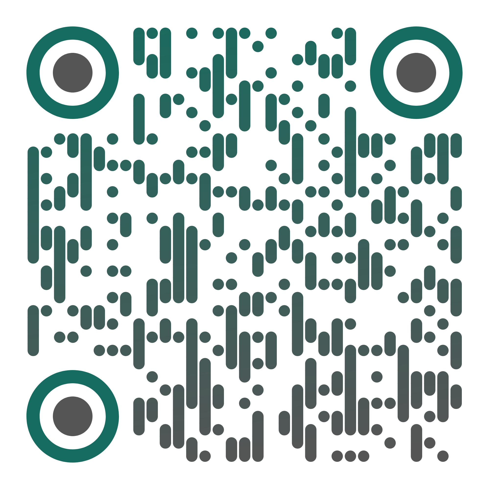

Nacho Sarabia Fernández
656 23 75 44
Datos de Contacto
Correo:
ignacio.sarabia@outlook.com
Github: https://github.com/isarabia
Skills
Lenguajes
Java | SQL | Javascript | C#
Arquitectura
Springboot | MVC | APIs REST API Gateway | Microservicios Swagger | Apache Kafka
Bases de Datos
PostgreSQL | SQL Server MySQL | MongoDB | H2
Infraestructura
Git | Jenkins | Docker Prometheus | Grafana | Azure
Testing
JUnit | JaCoCo | SonarQube Mockito | Postman | TDD

SOBRE MÍ
Soy una persona activa y comunicativa, me gusta generar buenos lazos con mi equipo e implicarme en los detalles de los proyectos en los que participo.
La tecnología es uno de mis hobbies y sigo la actualidad de las novedades del sector.
Experiencia y Formación
Desarrollo Backend - Intermark IT
> Desarrollo de producto en Microservicios Cloud con Java.
Azure, API Gateway, Kafka, Grafana, OpenAPI...
> Incorporación de herramientas de IA en el desarrollo de software
Curso - Inglés
B2 - Common European Framework of Reference (300 h)
Desarrollo Backend - CIC
> Desarrollo de producto Java en contenedores Docker
Springboot, MySQL, JUnit, Mockito, Docker...
> Migración de componentes a Microservicios Java
Desarrollo Backend - AKKODIS
> Desarrollo de Microservicios Cloud de alta disponibilidad y alta demanda.
SQL, MongoDB, Jenkins...
> Mejoras de calidad, cobertura y TDD
JUnit, JaCoCo, Mockito, SonarQ...
Desarrollo Backend - Soincon
> Desarrollo de soluciones IoT a medida de monitorización en tiempo real
Springboot, API REST, MongoDB, PLCs...
> Desarrollo de Producto en Java
Springboot, API REST, MySQL, JUnit, Swagger...
Desarrollo Web
> Ayuntamiento de Santander (6 meses)
Diseño y desarrollo de soluciones backend y auditorías web
Gestión de Proyectos con Metodologías Ágiles y Scrum
Miríadax - Fundación Telefónica (40 h)
Curso - Programación de Aplicaciones Web Java
Escuela de Organización Industrial (400 h)